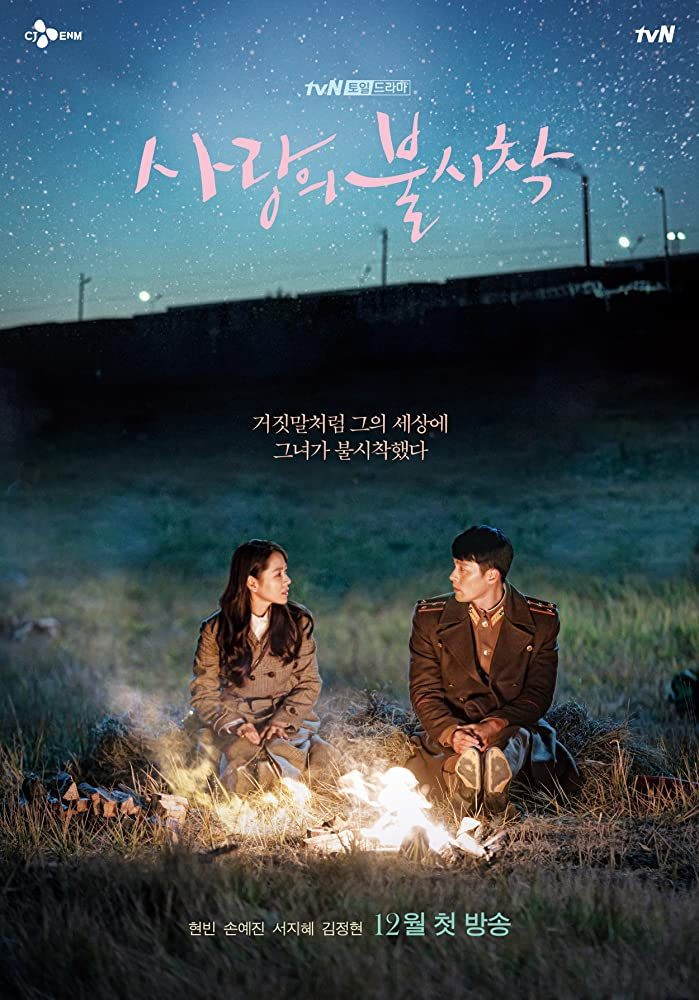

a fansite
A tale about a North Korean soldier and a South Korean heiress who, after a paragliding accident, finds herself in North Korea.
This K-Drama takes your on rollercoaster. A sweet but painful love story, friendsship, humanity, and politics standing in the way of everything.
Played by the beautiful Son Ye-jin, Se-Ri is a rich business woman in Seoul who finds herself in North Korea. Throughout the series, she grows as a person, adapts to new challanges facing her and makes the best out of the situation. She faces many hardships and numerous dangerous situations, but ends up building life-long friendship and finding love in the process.
Hyun Bin looks dazzling as North Korean Captain Ri, who in the first episode, finds Se-Ri stuck on a tree after her accident. Captain Ri appears cold at first, but ends up helping Se-Ri in her quest to return home. In the preocess he develops feelings for her, faces multiple obstacles trying to protect her, and we learn more about his multi-layered character - and fall in love with him as well.
So if you're on quarantine and you want to watch something that will grip your heart and stay with you for a long time..
I mean just look at this photo 💓
All images are taken from google search and belong to their respective sources, the writing is my own :)